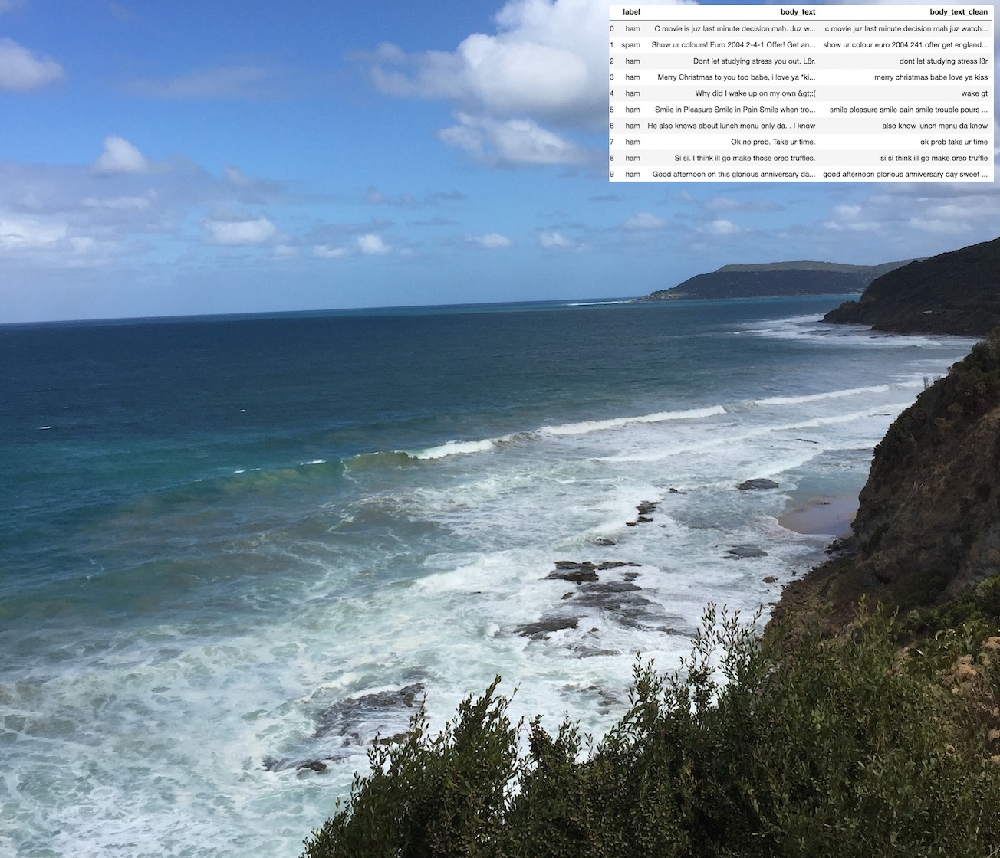
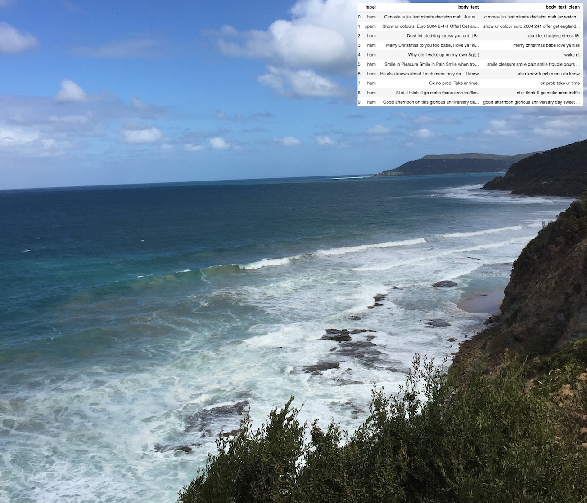
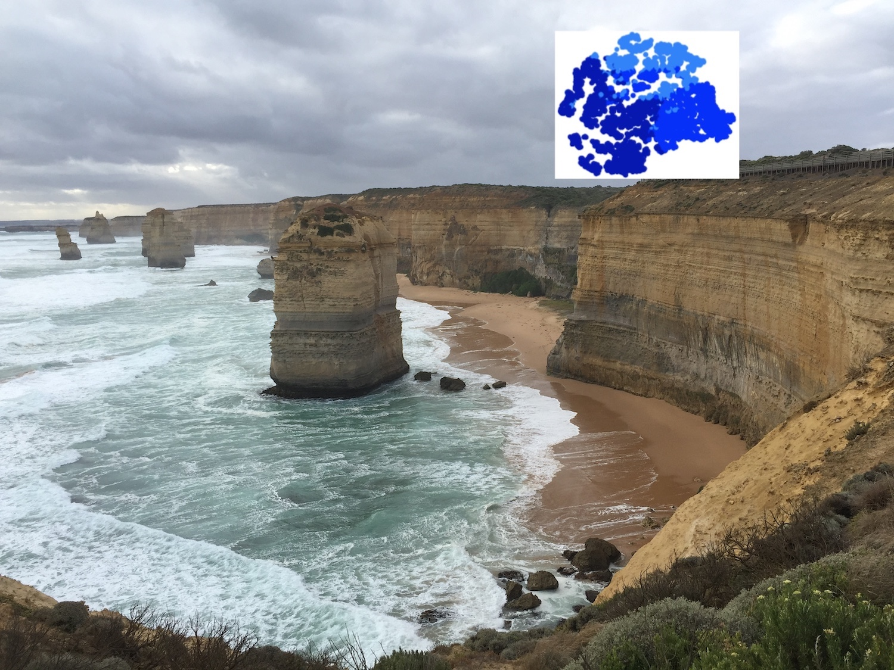
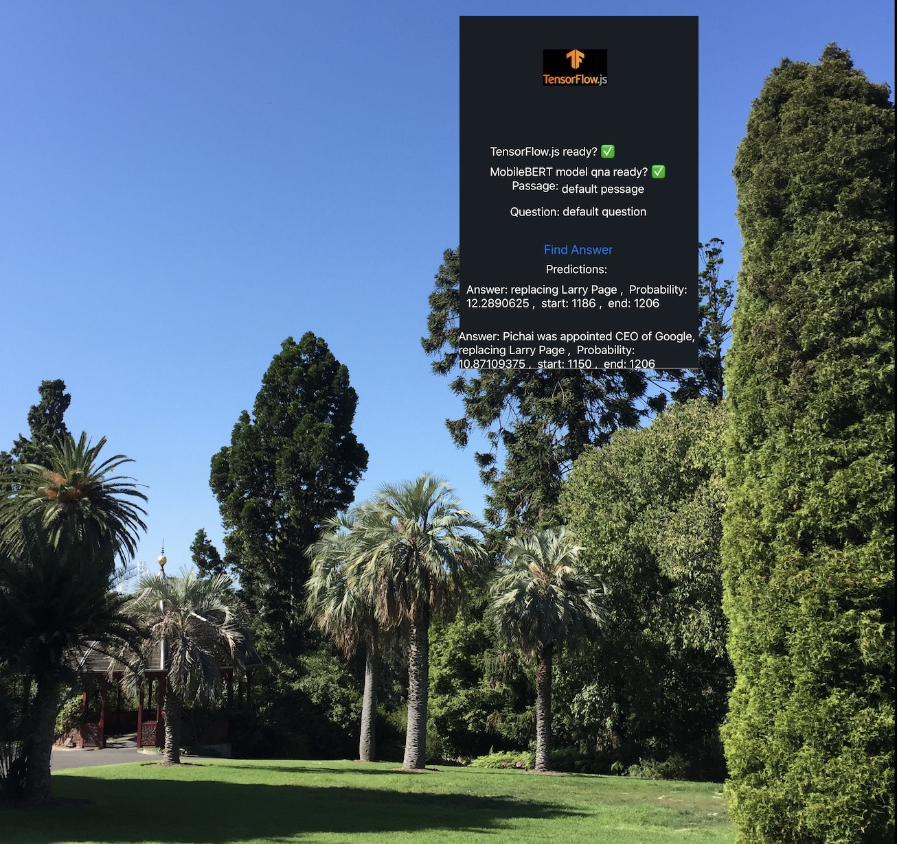
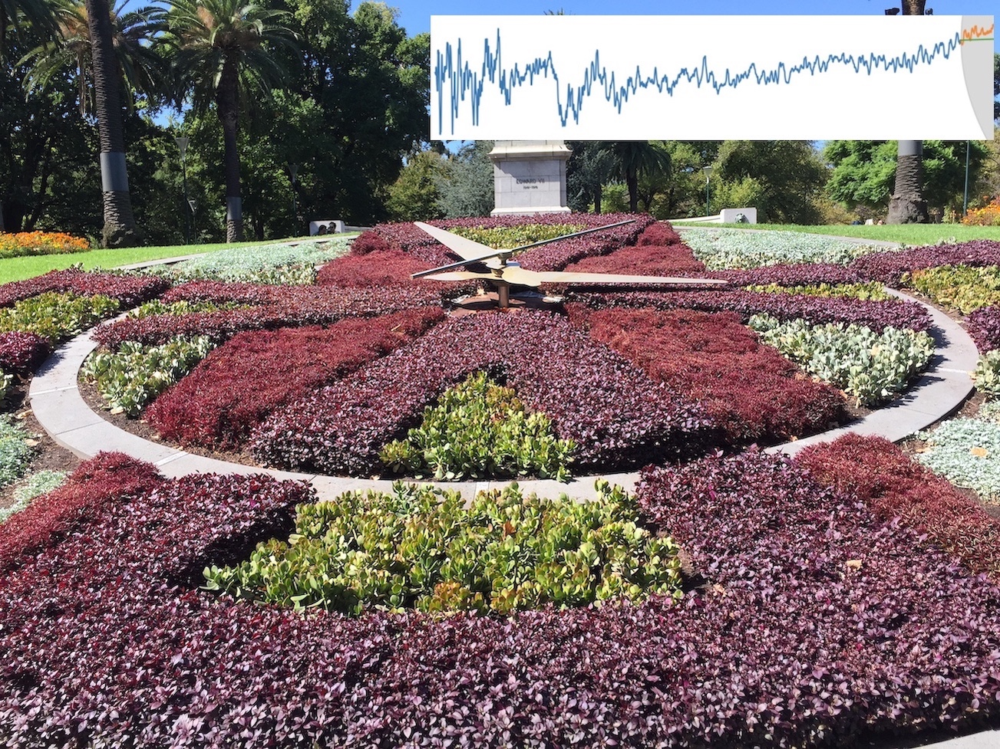
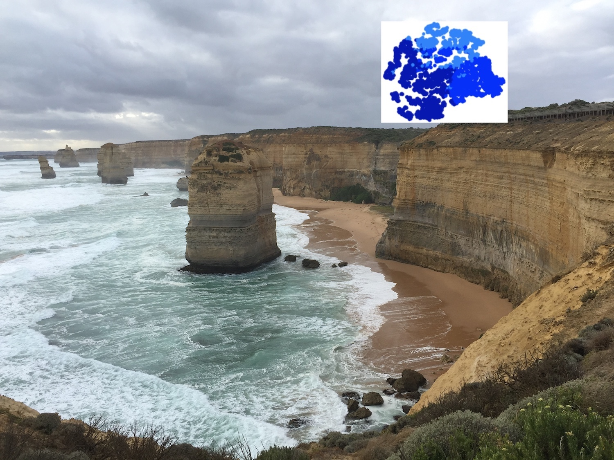
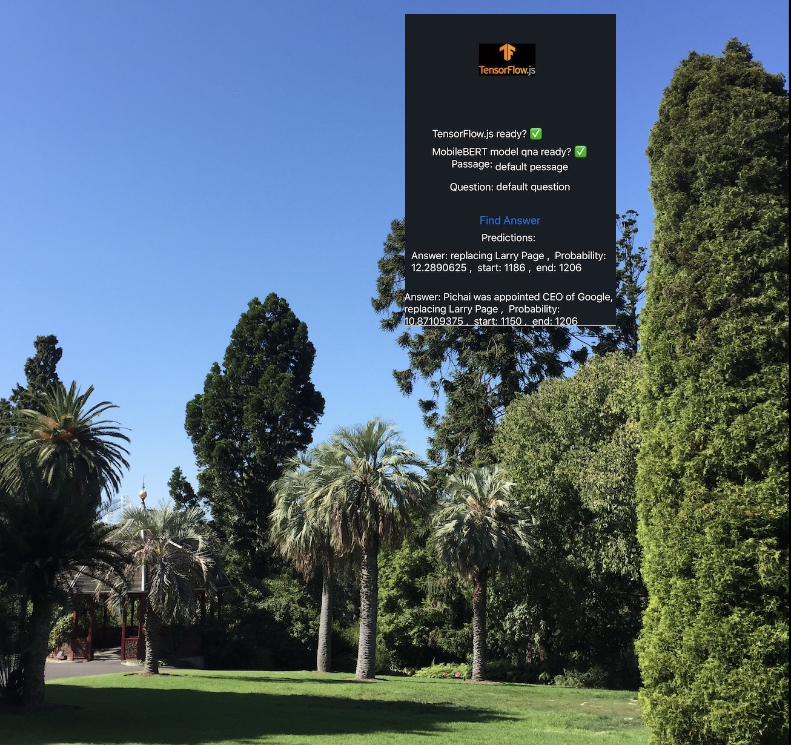
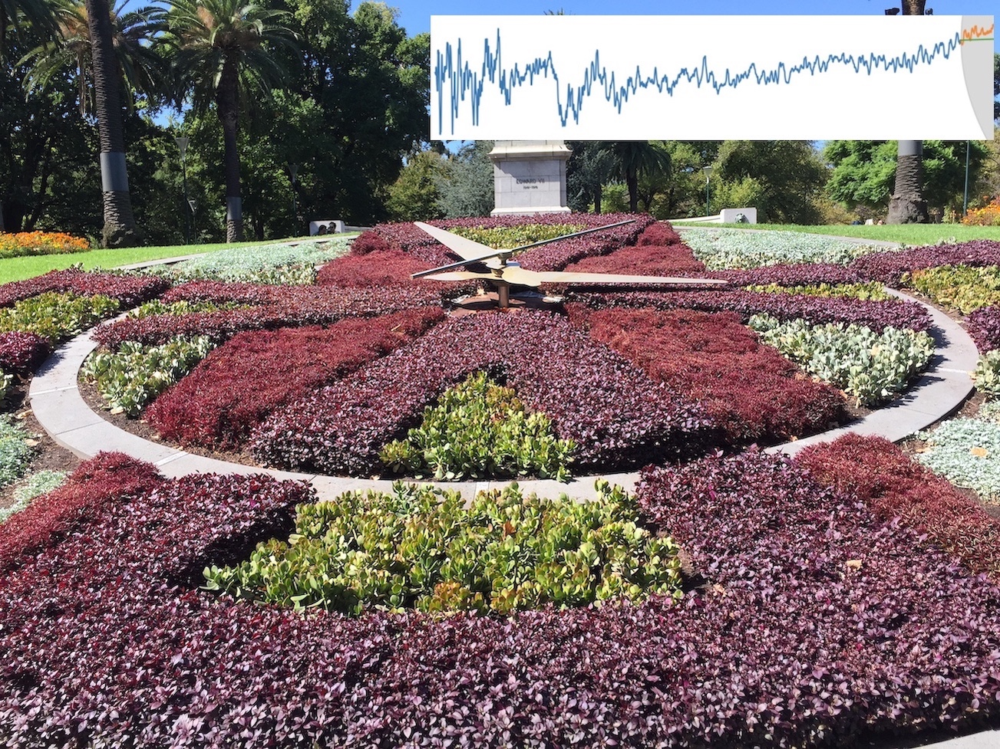

Python Data Preprocessing Using Pandas DataFrame, Spark DataFrame, and Koalas DataFrame
Preparing data for machine learning in Python See publication
See PublicationMachine Learning, Deep Learning, Data Science
Preparing data for machine learning in Python See publication
See PublicationEnd-to-end process of developing Spark-enabled machine learning pipeline in Python using Pandas, Koalas, scikit-learn, and mlflow. See publication
See publicationMachine Learning Automation in Finance. See publication
See publicationA deep learning approach for healthcare. See publication
See publicationA deep learning approach for NLP by combining Word2Vec with Keras LSTM. See publication
See publicationA multi-models deep learning approach for image and text understanding. See publication
See publicationA unsupervised deep learning approach for credit card customer clustering. See publication
See publicationMobile Image Classification App Development using Expo, React-Native, TensorFlow.js, and MobileNet. See publication
See publicationMobile Objects Detection App Development using Expo, React-Native, TensorFlow.js, and COCO-SSD. See publication
See publicationReading Comprehension using Expo, React-Native, TensorFlow.js, and MobileBERT. See publication
See publicationUsing Spark NLP with Jupyter notebook for natural language processing in Docker environment. See publication
See publicationAnalyzing time series data for forecasting using ARIMA and LSTM models. See publication
See publicationA Bayesian Method for Time Series Data Analysis and Forecasting in Python. See publication
See publication


 

 






Selected List of Publications on Machine Learning, Deep Learning, and Their Applications on Mobile Devices:
A deep learning approach for healthcare, Towards Data Science, Oct 30, 2019
Machine Learning Automation in Finance, Towards Data Science, Nov 13, 2019
Preparing data for machine learning in Python, Towards Data Science, Oct 14, 2019